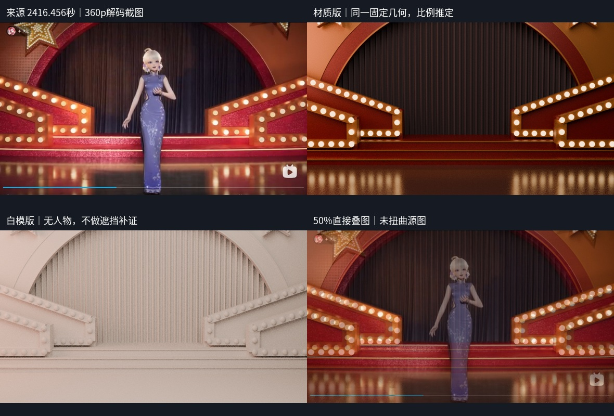
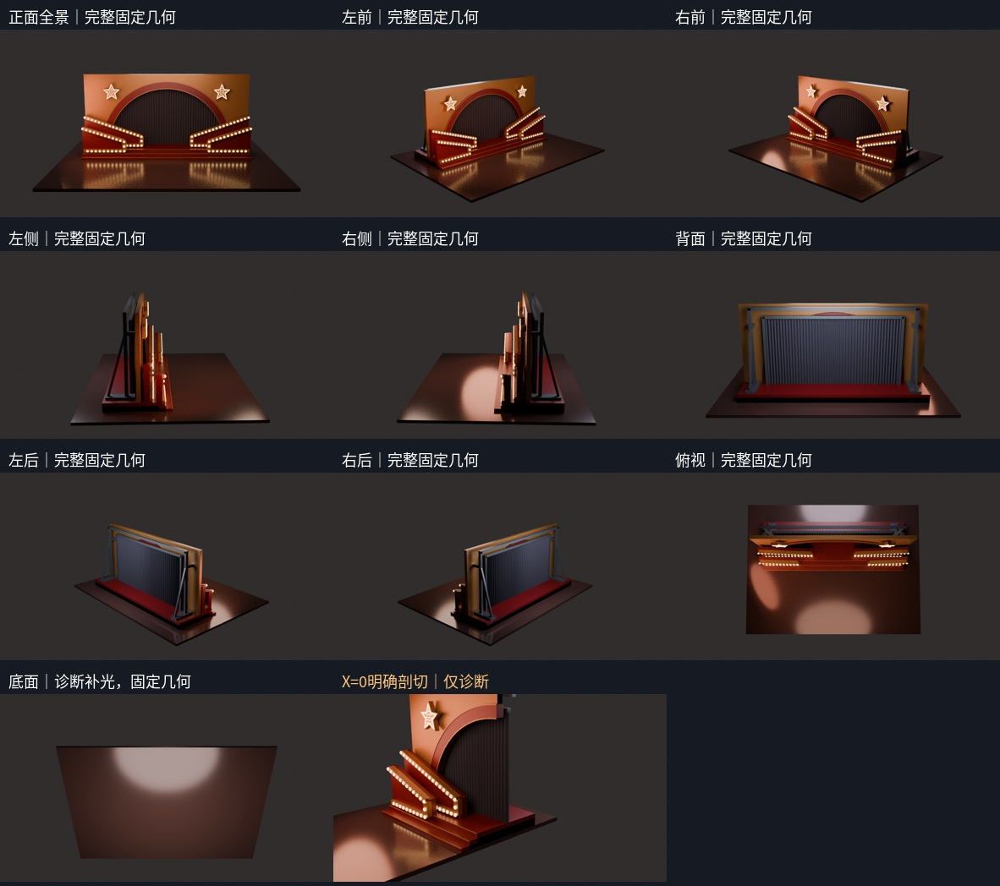

有限舞台资产：正面形体以来源为据；进深、背部支撑、上缘与地面边界为推定。不是完整宴会厅复原，没有已证实左右独立相机基线。
视频来源：彩色较宽正面 2416.456244秒。640×360解码，1180×664原比例截图。人物未重建。黑白插播仅辅助看形，不能当作同一灯光。新1080尝试没有取得稳定有效新帧。

四图均同尺寸，不做透视变形或不等比拉伸。单机位近似匹配，误差与遮挡保留展示，不宣称像素级精确复原。

所有普通视图保持同一固定几何，相机按完整包围盒后退，不裁掉顶部或支脚。底面额外使用诊断补光，不改几何。只有明确标注的X=0剖切是独立诊断副本。
必要的安装嵌入/交叠不等于全体布尔成一个实体。接触检查不是结构承载认证。独立核验另见 independent/geometry_checks.json：279件真实装配单连通，234颗全部灯泡前后几何通过，7904条限定目标接缝射线无漏。三段候选实体级差与金色鼻口区分；亮线不另算一级。
绝对尺寸、后台结构、深度、未入镜星尖和布景外边界。材质与灯光是近似解释；未增加宴会桌、天花或宴会厅。没有查证到本场已发布旧模型，不虚构版本历史。
独立中文核验报告：几何、装配和有限资产交付通过；源匹配仅比例近似，不作为高精度复刻。